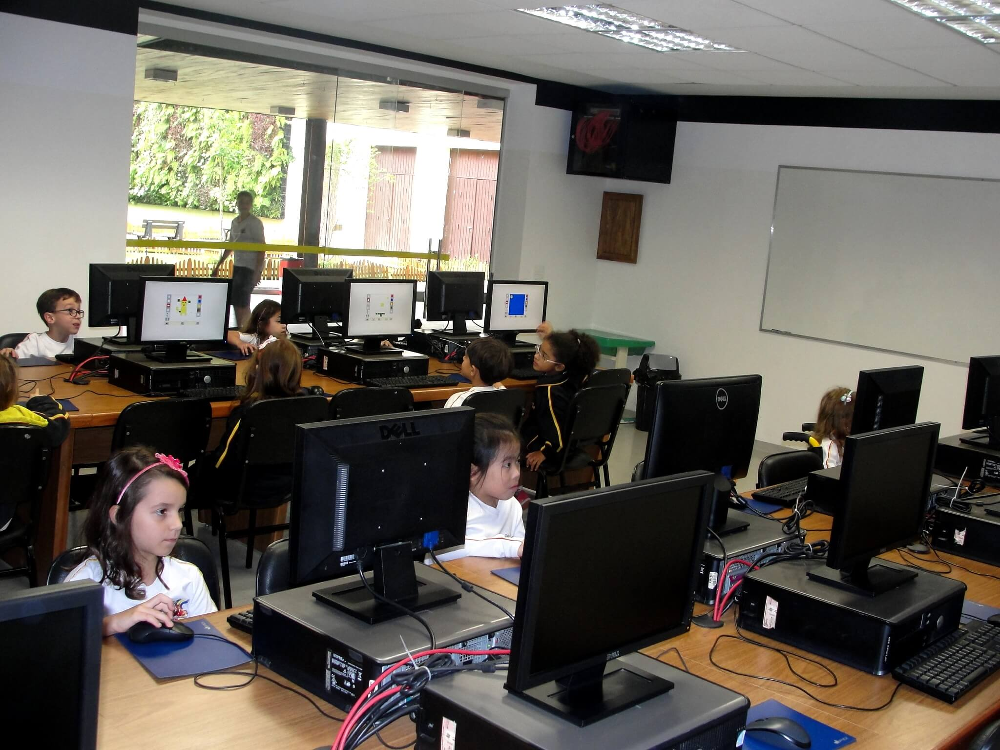

Benjamin Constant
Vida na escola
Conquistas
O que há de novo
Fale conosco

Em 16 de novembro, três alunos do Ensino Fundamental, vencedores da primeira fase do Concurso Internacional do Cartaz da Paz 2021 com tema “Estamos todos conectados”, foram homenageados pelos Associados do Lions Clube de SP Pacaembu.
Não tem sala de informatica
Telefone:(11) 5080-8177